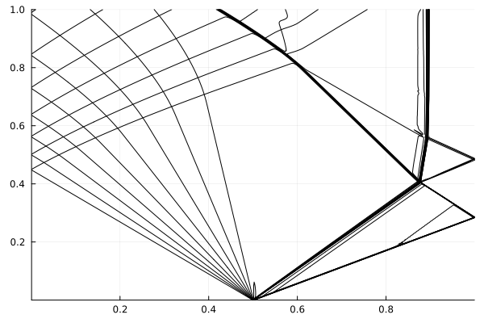

Examples
Sod Shock Tube
The Sod shock tube is a case involving a rightwards travelling shock wave and a leftwards travelling expansion wave. Its initial condition is given by:
\[\left( \begin{aligned} \rho_L \\ P_L \\ u_L \end{aligned} \right) = \left( \begin{aligned} 1.0 \\ 1.0 \\ 0.0 \end{aligned} \right),~ \left( \begin{aligned} \rho_R \\ P_R \\ u_R \end{aligned} \right) = \left( \begin{aligned} 0.125 \\ 0.1 \\ 0.0 \end{aligned} \right)\]
where $\rho$, $P$, and $u$ are the density, pressure, and velocity, the domain is in the range $x=[0,1]$, and the subscripts L and R refer to states to the left and right of an interface initially located at $x=0.5$. While an exact solution for this configuration can be found, this example will focus on setting up an Euler1D simulation to simulate the Sod shock tube.
A simulation is initialized using a set of dictionary key:value pairs describing various aspects of the simulation, including the functions used to describe the initial profiles of density, velocity, pressure, and the ratio of specific heats. A default set of parameters can be obtained using the function [DefaultSimulationParameters()][@ref]:
julia> using Euler1Djulia> simulation_parameters = DefaultSimulationParameters()Dict{String, Any} with 14 entries: "artificial_conductivity_coefficient" => 0.01 "end_time" => 1.0 "init_pressure_function" => nothing "artificial_viscosity_coefficient" => 1.0 "init_gamma_function" => nothing "number_of_zones" => 1000 "end_position" => 1.0 "maximum_cycles" => 1.0e6 "start_position" => 0.0 "start_time" => 0.0 "init_velocity_function" => nothing "CFL" => 0.2 "minimum_timestep" => 1.0e-7 "init_density_function" => nothing
You may notice that there are several parameters with a value of nothing. These must be supplied before the simulation can be initialized since it is difficult to make reasonable default assumptions. Of particular note are the keys init_density_function, init_velocity_function, init_pressure_function, and init_gamma_function. These refer to functions that describe the inital profiles of density, velocity, pressure, and the ratio of specific heats, respectively. A set of functions to implement the Sod shock tube initial conditions looks like:
julia> function init_density( x ) if ( x < 0.5 ) return 1.0 else return 0.125 end end;julia> function init_velocity( x ) return 0.0 end;julia> function init_pressure( x ) if ( x < 0.5 ) return 1.0 else return 0.1 end end;julia> function init_gamma( x ) return 1.4 end;
The x argument in these functions is the location of where a given variable will be stored. Due to the fact that some variables are zone-centered while others are edge-centered, it should not be assumed that x will have the same value in all functions. Additionally, due to how Julia performs vectorized computations, these functions should not assume anything about the order in which they are executed. i.e., that the n-th function call will always have a certain value of x.
The simulation_parameters dictionary can now be modified to describe the desired initial condition. In this case, this would look like:
julia> simulation_parameters["init_density_function"] = init_density;julia> simulation_parameters["init_velocity_function"] = init_velocity;julia> simulation_parameters["init_pressure_function"] = init_pressure;julia> simulation_parameters["init_gamma_function"] = init_gamma;
The simulation_parameters dictionary has many other keys that can be modified. See DefaultSimulationParameters() for a list of parameters that can be set.
Once all desired parameters have been set, the simulation can be initialized:
julia> init_state = InitializeSimulation( simulation_parameters )Euler1D simulation Start time: 0.0 Current time: 0.0 Final time: 1.0 Last Δt: 1.0e-7 (Min: 1.0e-7) Cycle count: 0 (Max: 1000000) CFL number: 0.2 Number of zones: 1000 Available fields: nzones, nedges, CFL, t₀, t₁, Cᵥ, Cₖ, time, Δt, cycles, min_Δt, max_cycles, zone_edge, zone_center, zone_length, gamma, mass, density, velocity, pressure, intenergy, speedofsound, viscosity, energy_flux, ∂u∂t, ∂e∂t
The init_state variable is a Simulation type that holds information about the simulation.
The functions that describe the initial conditions are not called until InitializeSimulation() is called, at which time they are called at every point in the domain. For these reasons, it is good to be sure that the functions are not computationally heavy.
A common time to examine the Sod shock tube solution is t=0.1. The AdvanceToTime() function can be used to advance the simulation to this time:
julia> end_state = AdvanceToTime( init_state, 0.1; exact=true )where 0.1 is the time to advance to and the exact=true keyword tells the simulation to modify the final time step to stop as close as possible to the final time. If exact=false were supplied instead (or if the exact argument was omitted), the simulation would stop as soon as the current time is greater than the specified stopping time, but no modification of the timestep would be made and so the actual stopping time may differ from the specified stopping time. The size of the difference will depend on the timestep size.
This example wrote out the functions used for initial conditions in full for instructive purposes. However, there is no requirement that the functions be defined in this way. For example, for simple initial conditions, a function could be defined using ternary operators:
julia> init_density( x ) = x < 0.5 ? 1.0 : 0.125; # A function that varies in spacejulia> init_gamma( x ) = 1.4; # A function with a constant value
or even using anonymous functions:
julia> simulation_parameters["init_density_function"] = (x) -> x < 0.5 ? 1.0 : 0.125; # A function that varies in spacejulia> simulation_parameters["init_gamma_function"] = (x) -> 1.4; # A function with a constant value
There is no requirement or advantage to using one method over any other. These are simply alternative ways of defining a function to describe the initial condition.
Plotting Results
This section outlines a few examples of how simulation data can be post-processed to visualize results or perform advanced processing.
There are numerous packages in the Julia ecosystem to handle plotting (e.g. Plots.jl, Makie.jl), writing to disk (e.g. CSV.jl, DataFrames.jl, HDF5.jl), and any other data analysis routine that might be desired. The people developing these packages (and others like them) are immensely talented, and one would be well-advised to utilize their hard work if a package with suitable functionality exists. For this reason, this package actively avoids making assumptions about what a user will want to do with the simulation data after the simulation is complete. This means that there is no built-in functionality to plot simulation data, write it to disk, or perform any other sort of postprocessing. Instead, all simulation outputs are simply elementary Julia types (e.g. Vector{Float64}), and can be manipulated using the usual built-in Julia methods, or by using any suitable package that provides the required functionality.
Line Plot
The simplest case of post-processing data is to just plot profiles of the solution state at the final time in the simulation. Fortunately, all necessary fields can be obtained from the Simulation variable in the form of elementary Julia types. For example, to plot the profile of density from the simulation performed in Sod Shock Tube using the Plots.jl library, one can do
julia> using Plotsjulia> plot( end_state.zone_center, end_state.density );
Similar plots can be made for other zone-centered quantities such as internal energy or pressure.
If plotting edge-centered quantities such as velocity, the end_state.zone_edge variable should be used for the spatial coordinate.
X-T diagrams
It is often useful to look at the evolution of the problem solution as a function of space and time rather than at just a single time instant. X-T diagrams are a useful way to perform this visualization. Gathering the data required to generate this type of plot is a little bit more complicated than the previous examples, however.
The simulation can be set up identically to previous examples:
julia> simulation_parameters = DefaultSimulationParameters(); # We'll define our initialization functions using anonymous functions to keep things shortjulia> simulation_parameters["init_density_function"] = (x) -> x < 0.5 ? 1.0 : 0.125;julia> simulation_parameters["init_velocity_function"] = (x) -> 0.0;julia> simulation_parameters["init_pressure_function"] = (x) -> x < 0.5 ? 1.0 : 0.1;julia> simulation_parameters["init_gamma_function"] = (x) -> 1.4;julia> init_state = InitializeSimulation( simulation_parameters )
In order to generate an X-T diagram, we will need to record the simulation state at multiple times in the simulation. To do this, let's define a new function that will be responsible for advancing the simulation through time:
julia> using Interpolationsjulia> using Plotsjulia> function run_simulation( init_state::Simulation{T}, end_time::T ) where { T <: AbstractFloat } new_state = deepcopy( init_state ) # We'll need a copy of our initial state to modify inside the while loop # Information about plotting plot_dt = 0.001 # How often to stop and record data next_plot = 0.0 # The next time to stop and record data # Set up some matricies to hold our plotting data plot_times = zeros( 0 ) # The times at which we've recorded data plot_positions = init_state.zone_center # Where to plot the data at in space. We'll use the initial grid plot_J₊ = zeros( 0, init_state.nzones ) # A matrix of the positive Riemann invariant values in every zone in the simulation plot_J₋ = zeros( 0, init_state.nzones ) # A matrix of the negative Riemann invariant values at every zone in the simulation while ( new_state.time.x <= end_time ) # Keep looping until we've reached our end time new_state = AdvanceToTime( new_state, next_plot; exact=true ) # Advance the solution to the next time to record data # Now record data about the simulation state plot_times = vcat( plot_times, new_state.time.x ) # Record our current time, appending it to the plot_times vector # Now compute the Riemann invariants. # For this we'll need to interpolate the velocities to zone centers, which we'll do with a simple average uₘ = 0.5 .* ( new_state.velocity[1:end-1] .+ new_state.velocity[2:end] ) # Now compute the Riemann invariants J₊ = uₘ .+ ( 2.0 .* new_state.speedofsound ) ./ ( new_state.gamma .- 1.0 ) # Positive Riemann invariant J₋ = uₘ .- ( 2.0 .* new_state.speedofsound ) ./ ( new_state.gamma .- 1.0 ) # Negative Riemann invariant # Most contour plot functions assume data is on a cartesian grid # However, because the grid zones in the simulation are moving, we'll need to interpolate the data back onto a cartesian grid. # For simplicity, we will use the initial simulation grid as the grid for plotting # We can use Interpolations.jl for this J₊_interp = interpolate( ( new_state.zone_center, ), J₊, Gridded(Linear()) ) # Set up a linear interpolation of our data J₊_extrap = extrapolate( J₊_interp, Line() ) # Linearly extrapolate if needed. plot_J₊ = vcat( plot_J₊, J₊_extrap( plot_positions )' ) # Interpolate the simulation data back onto the initial grid and append it to our matrix of data J₋_interp = interpolate( ( new_state.zone_center, ), J₋, Gridded(Linear()) ) # Set up a linear interpolation of our data J₋_extrap = extrapolate( J₋_interp, Line() ) # Linearly extrapolate if needed plot_J₋ = vcat( plot_J₋, J₋_extrap( plot_positions )' ) # Interpolate the simulation data back onto the initial grid and append it to our matrix of data next_plot = next_plot + plot_dt end # Now that the simulation is done, we can save our plot # First compute the minimum and maximum Riemann invariant values. This helps set the contour levels for our plot minJ = min( minimum( plot_J₊ ), minimum( plot_J₋ ) ) maxJ = max( maximum( plot_J₊ ), maximum( plot_J₊ ) ) # Now plot the Riemann invariants as contours p = contour( plot_positions, plot_times, plot_J₊; c=:black, levels=minJ:0.2:maxJ, cbar=false ) # Positive invariants contour!( p, plot_positions, plot_times, plot_J₋; c=:black, levels=minJ:0.2:maxJ ) # Negative invariants savefig( p, "sod_xt.svg" ) return new_state end;
There's a lot going on in this function. Most of it is straightforward and explained in the comments. However, there's a few things worth highlighting. In particular, X-T diagrams can be made using quantities such as pressure or density, but Riemann Invariants are a particularly powerful way to visualize the movement of waves within the domain. The Euler equations have positive and negative Riemann invariants, corresponding to rightwards- and leftwards-moving waves, respectively. These are computed using the following lines:
# Now compute the Riemann invariants.
# For this we'll need to interpolate the velocities to zone centers, which we'll do with a simple average
uₘ = 0.5 .* ( new_state.velocity[1:end-1] .+ new_state.velocity[2:end] )
# Now compute the Riemann invariants
J₊ = uₘ .+ ( 2.0 .* new_state.speedofsound ) ./ ( new_state.gamma .- 1.0 ) # Positive Riemann invariant
J₋ = uₘ .- ( 2.0 .* new_state.speedofsound ) ./ ( new_state.gamma .- 1.0 ) # Negative Riemann invariantThese lines first translate the velocity (which is edge-centered) to the zone centers, and then uses that average velocity along with the speed of sound and ratio of specific heats to compute the positive and negative Riemann invariants as a function of space.
Now that we have the Riemann invariants, we need to store them for plotting. However, most contour plotting functions (which we will use to plot our X-T diagram) assume that the data is stored on a rectangular grid. In this context, this would mean that the x positions are the same for all time. However, because this is a Lagrangian code, the x positions of the data are not constant as a function of time, so we need to massage the data into a format the contour plotting function can accept. This is done by interpolating the data at a given time back onto the initial grid using the Interpolations.jl package and the following lines:
J₊_interp = interpolate( ( new_state.zone_center, ), J₊, Gridded(Linear()) ) # Set up a linear interpolation of our data
J₊_extrap = extrapolate( J₊_interp, Line() ) # Linearly extrapolate if needed.
plot_J₊ = vcat( plot_J₊, J₊_extrap( plot_positions )' ) # Interpolate the simulation data back onto the initial grid and append it to our matrix of data
J₋_interp = interpolate( ( new_state.zone_center, ), J₋, Gridded(Linear()) ) # Set up a linear interpolation of our data
J₋_extrap = extrapolate( J₋_interp, Line() ) # Linearly extrapolate if needed
plot_J₋ = vcat( plot_J₋, J₋_extrap( plot_positions )' ) # Interpolate the simulation data back onto the initial grid and append it to our matrix of dataThe interpolate and extrapolate functions set up this interpolation, and then the vcat lines actually perform the interpolation and append the result to the matricies we're using to store our data.
Now that the simulation is done, we'll configure the contour plot to actually produce the X-T diagram. First, we want to compute the minimum and maximum values of the Riemann invariants. We do this so that the contour plots for the positive and negative invariants use the same contour levels, which helps make sure lines are connected to each other and aids in visualization.
# First compute the minimum and maximum Riemann invariant values. This helps set the contour levels for our plot
minJ = min( minimum( plot_J₊ ), minimum( plot_J₋ ) )
maxJ = max( maximum( plot_J₊ ), maximum( plot_J₊ ) )We can now actually create the contour plot:
# Now plot the Riemann invariants as contours
p = contour( plot_positions, plot_times, plot_J₊; c=:black, levels=minJ:0.2:maxJ, cbar=false ) # Positive invariants
contour!( p, plot_positions, plot_times, plot_J₋; c=:black, levels=minJ:0.2:maxJ ) # Negative invariants
savefig( p, "sod_xt.svg" )These lines are responsible for actually creating the contour plot. The first line plots the positive (rightwards-moving) Riemann invariants, and the second line adds a plot for the negative (leftwards-moving) Riemann invariants. The optional arguments are c, which sets the line color, levels, which sets the contour levels to plot, and cbar, which tells the plotting routine not to plot a colorbar as it isn't useful in these contexts. Finally, savefig saves the plot to a file called sod_xt.svg.
The plot colors were set to black as this makes a uniform looking plot. However, you might try plotting the two with different colors (say, c=:red in one plot) as this will show how the positive and negative Riemann invariants correspond to left- and right-moving waves.
The levels argument, particularly the step size of 0.2, was tuned to produce a good looking plot for this case. You will probably need to adjust this for other configurations.
With everything set up we can run our simulation and take a look at our plot. For illustration purposes, the final time in the simulation will be a later time in order to better show the movement of waves in the final plot.
julia> final_state = run_simulation( init_state, 1.0 )
and there we go! You can see the leftwards moving expansion wave and the rightwards moving shock and contact surface. Reflections off of the end walls are also visible, as are interactions between different waves.
You might notice that things like the material interface look a little wider than might be expected. Try playing around with the artificial_viscosity_coefficient and artificial_conductivity_coefficient values to see what effect these parameters have.
Modifying Problem State
There may be cases where it is desirable to stop and modify the problem state part way through a simulation. For example, to add another shock wave. This can be done using the UpdateSimulationState!() function. This function takes four arguments that are Functions describing the new problem density, velocity, pressure, and ratio of specific heats. However, in this case the functions have a slightly different signature:
function my_new_state( x, oldValue )
...
endNotice that there is now an oldValue argument. This will hold the current value of the variable at the position x. If you don't want to modify anything, you can just return oldValue from this function.
As a trivial example, let's say we want to modify the example from the Line Plot section to add a sinusoidal profile to the existing density, set the velocity to zero, and leave everything else untouched. Our functions might look like
julia> function update_density( x, oldValue ) return 0.05 * sin( 20 * pi * x ) + 0.05 + oldValue # Need to add a value to make sure density doesn't go to zero end;julia> function update_velocity( x, oldValue ) return 0.0 end;julia> function update_pressure( x, oldValue ) return oldValue end;julia> function update_gamma( x, oldValue ) return oldValue end;
With these functions we can now update the problem state:
julia> UpdateSimulationState!( end_state, update_gamma, update_density, update_velocity, update_pressure )and if we plot density again, we'll see the density field has been updated:
julia> plot( end_state.zone_center, end_state.density );and the velocity field is now zero everywhere:
julia> plot( end_state.zone_edge, end_state.velocity );